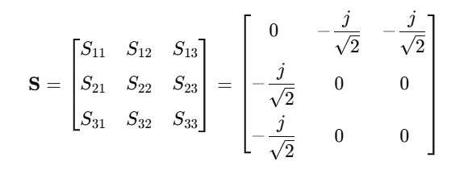
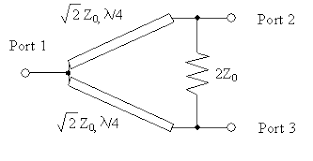

Answer:
An equal divider splits input power equally among output ports (e.g., 3 dB per port for 2-way), while an unequal divider splits power in a specified ratio (e.g., 70:30). Unequal dividers require different line impedances/transformers or tapped structures to achieve the amplitude ratio while preserving match/isolation.
Answer:
Answer:
The resistor between output ports absorbs power from imbalances (unequal loads) preventing reflections back to the input and providing isolation between outputs. For ideal matched loads it dissipates no power, so it doesn’t increase insertion loss in the matched case.
Answer:
A directional coupler samples power from one direction (coupling + isolation + directivity).
A hybrid coupler (e.g., 90° or 180°) splits/combines power with defined amplitude and phase relationships between ports (used for split/combining with phase control). Hybrids are used for mixers, modulators, balanced amplifiers.
Answer:
Coupling (dB): ratio of input power to power at coupled port.
Directivity (dB): difference between coupling to the intended coupled port and the unwanted coupled port; measures how directional the coupler is.
Isolation (dB): attenuation between input and isolated port (how well one port is isolated from another).